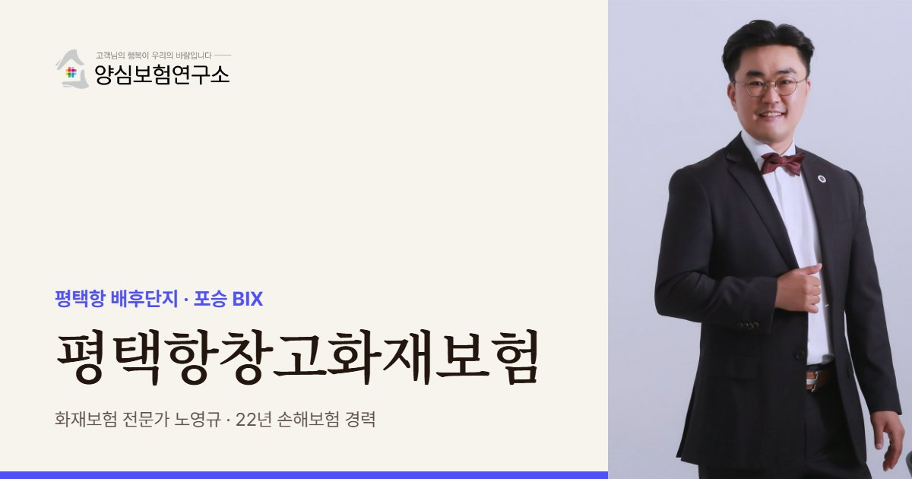

평택항창고화재보험은 포승읍 배후단지와 청북·진위 창고의 보세·냉동·직구 화물 화재 손해와 화주 책임을 대비하는 보험입니다. 통관 전 화물은 소유자와 책임 주체가 복잡해 보세창고 특허와 화물 인수 서류의 책임 문구부터 확인합니다.
평택항창고화재보험 보장 항목
- 보세 화물 배상: 세관 절차를 기다리는 청북·진위 보세창고 화물에 대한 창고업자 배상
- 수입 냉동 식품: 만호리 복합센터 등의 냉동 수산물·육류 화재와 온도 이탈 폐기(특약 검토)
- 직구 소형 화물: 해외 직구 플랫폼의 작은 상자 단위 화물이 대량으로 쌓인 분류 창고 재고
- 공사장 번짐: 배후단지 옆 부지 공사장 불티·자재 화재가 번져 생긴 내 창고 손해
평택항창고화재보험 보험료 산정 기준과 가입 시 고려사항
- 보세 특허: 세관 특허 조건과 화물 관리 책임 범위, 화물 인수 서류의 책임 시작 문구
- 냉동 구역 비중: 상온과 저온 구역의 면적·보관품을 나눠 잡은 구역별 금액
- 해안 배선 점검: 바닷바람에 빨리 녹스는 전기 설비의 부식·누전 점검 기록
- 직구 피크 물량: 연말처럼 직구 주문이 몰리는 달의 최대 보관 금액과 입출고 시스템 자료

항만 창고는 통관 전 화물이 많아 소유권과 책임이 복잡합니다. 노영규 대표는 보세창고 특허 여부와 화물 인수 서류의 책임 문구부터 확인합니다.
평택항 안내
평택항, 왜 창고화재보험이 중요할까요?
평택항창고화재보험은 포승읍 평택항 배후단지와 BIX, 청북·진위 일대 창고가 보세 화물, 냉동 식품, 직구 상품을 보관하다 생기는 화재 손해와 화주 책임을 대비하는 보험을 이릅니다. 평택 물류 공급은 최근 3년 동안 1.7배 이상 늘었습니다(2025-07 보고서).
평택·당진항 항만배후단지는 1단계 약 142.9만㎡가 조성을 마쳤고, 2단계 구역이 나눠서 개발되고 있습니다. 포승읍 신영리에서는 2-3단계 1종 배후단지가 2027년 준공을 목표로 공사를 시작했습니다. 만호리 배후단지에는 냉동·냉장·상온을 한 건물에 둔 연면적 약 12.3만㎡ 복합센터가 있습니다.
창고가 많은 이유는 중국과의 거리입니다. 최근에는 해외 직구 플랫폼 물량이 늘면서 작은 상자 단위 화물을 대량으로 분류하는 창고도 생겼습니다. 청북읍, 포승읍, 진위면에는 세관 절차를 기다리는 화물을 두는 보세창고가 자리 잡고 있습니다.
2022년 1월 청북읍 냉동창고 신축 공사장에서는 큰불이 나 진화에 나선 소방관들이 순직했습니다. 공사 중인 저온창고는 단열재와 용접 작업이 겹쳐 위험이 크다는 점을 보여 준 사고입니다. 배후단지가 계속 넓어지는 평택항에서는 내 창고가 다 지어진 뒤에도 옆 부지 공사가 몇 년씩 이어질 수 있다는 점까지 염두에 둡니다.
2022.01 청북읍 냉동창고 신축 공사장 화재로 진화 중이던 소방관이 순직했습니다. (서울신문)
주요 위험
평택항 보세창고는 어떤 화재 위험을 먼저 살피나요?
통관 전 보세 화물
세관 절차를 기다리는 화물은 소유자와 책임 주체가 복잡해 배상 범위를 따로 정해야 합니다.
수입 냉동 식품
냉동 수산물·육류는 화재와 함께 온도 이탈로 인한 폐기 위험을 안고 있습니다.
직구 소형 화물
작은 상자가 대량으로 쌓이면 가연물이 많고 품목별 손해 입증이 어렵습니다.
바닷바람과 부식
해안가 창고는 전기 설비와 배선이 빨리 녹슬어 누전 점검이 더 자주 필요합니다.
컨테이너 차량 출입
트레일러가 쉴 새 없이 드나들어 야적장 차량 화재나 충돌 사고가 생길 수 있습니다.
배후단지 공사 구역
개발이 진행 중인 구역은 인근 공사장 불티와 신축 공사 위험을 함께 봐야 합니다.
※ 실제 보장 여부와 한도, 면책 사항은 가입하는 상품의 약관과 창고 현황에 따라 달라집니다.
방문 상담
평택항 직접 방문 상담
포승읍 만호리·신영리 배후단지와 BIX, 청북읍 냉동창고, 진위면 보세창고까지 찾아가 화물 구성과 통관 흐름, 냉동설비를 함께 확인합니다.
꼭 확인할 점검 항목
평택항 창고화재보험 가입 전 무엇을 점검하나요?
- 보세창고 특허 여부세관 특허 조건과 화물 관리 책임 범위를 확인합니다.
- 화물 인수 서류 문구창고가 화물을 받는 순간부터 책임지는지 봅니다.
- 냉동 구역 비중상온과 저온 구역 면적과 보관품을 나눠 적습니다.
- 해안 배선 점검전기 설비의 부식 점검 기록을 남깁니다.
- 인근 공사 현황배후단지 신규 공사 위치와 거리를 확인합니다.
고객 후기
실제 계약고객 만족 사례


※ 실제 계약고객과 나눈 카카오톡 상담과 후기 일부이며, 개인정보는 가렸습니다.
지역 상담 Q&A
평택항창고화재보험 Q&A
보세창고에 있던 수입 화물이 타면 창고 책임인가요?
결론은 계약과 관리 상태에 따라 달라집니다. 창고업자가 화물을 맡아 관리하는 동안 생긴 손해는 배상 요구를 받을 수 있어, 창고업자 배상책임을 따로 대비하는 편이 안전합니다.
직구 상품처럼 작은 화물이 많으면 가입금액은 어떻게 정하나요?
하루 평균이 아니라 물량이 가장 많은 시기의 보관 금액을 기준으로 잡습니다. 입출고 시스템 자료가 있으면 사고 뒤 손해 입증에도 도움이 됩니다. 연말처럼 직구 주문이 몰리는 달은 따로 표시해 둡니다.
냉동과 상온이 섞인 복합센터는 보험을 따로 드나요?
한 증권으로 묶을 수 있지만 구역별로 위험과 금액을 나눠 적어야 합니다. 냉동 구역은 온도 이탈 특약을 별도로 검토합니다.
배후단지 옆 부지에서 공사가 시작됐는데 우리 창고도 영향이 있나요?
공사장 불티나 자재 화재가 번질 수 있어 영향이 있습니다. 공사 기간 동안 번짐 피해가 어떻게 처리되는지, 상대 공사업체의 보험을 확인하는 방법을 함께 안내합니다.
평택항 야적장 컨테이너 차량 사고도 대비해야 하나요?
트레일러가 쉴 새 없이 드나들어 야적장 차량 화재나 충돌 사고가 생길 수 있습니다. 구내 차량 사고가 어느 보험에서 처리되는지 배상책임과 함께 미리 정리해 두는 편이 좋습니다.